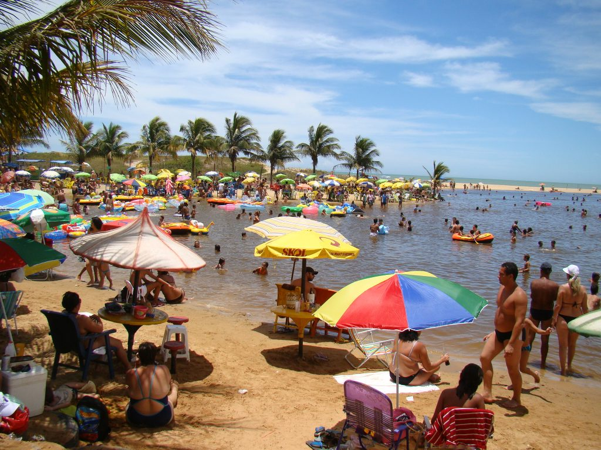

Marataízes - ES
Cidade litorânea.
Marataízes, cidade litoranea de mares calmos, praias bonitas no litoral capixaba.
Nossas recomendações seriam:
Camping do siri

O maior camping a beira-mar da do Brasil, com 150mil m² de área para os campistas e diversas atividades nas épocas de alta temporada, incluindo shows ao vivo na praia (que é o nosso quintal), shows à noite, tirolesa, almoço na cozinha do camping dentre outros. Oferecemos ainda como opcao de pernoite o camping (sendo o usuario responsavel por trazer seu equipamento) estrutura de chalés e de kitnets.
Lagoa do Siri

Uma lagoa de água doce e escura, de frente para a praia, cercada de restaurantes e que os turistas costumam frequentar justamente pela experiencia de estar num bar molhado. Alem disso, a lagoa conta com pequenos peixes.